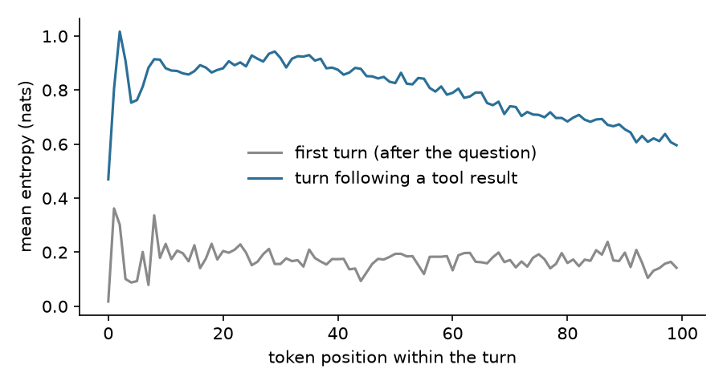
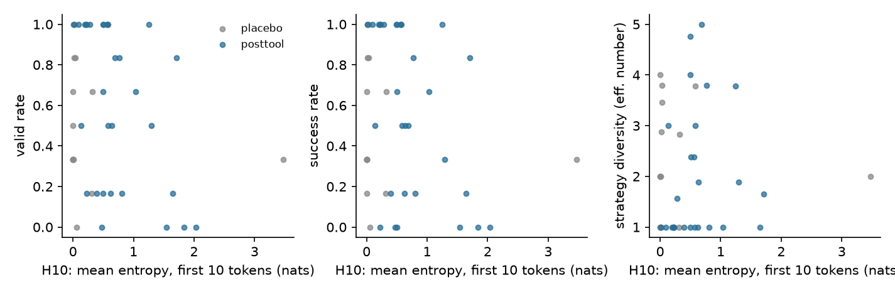
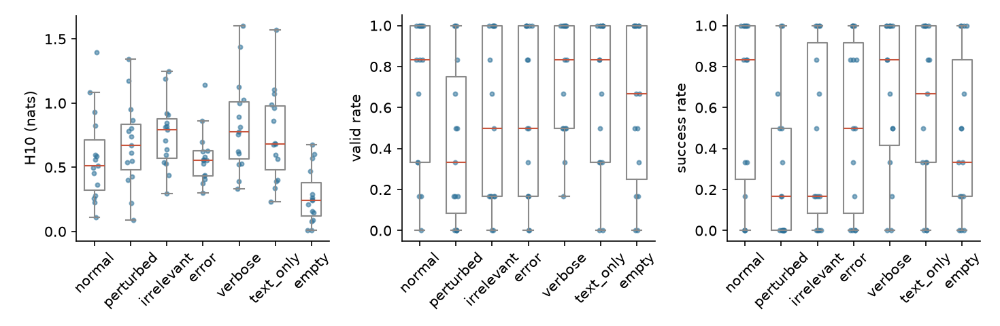
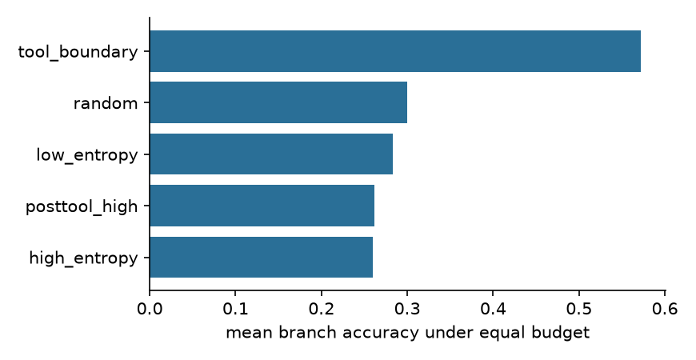

2026-11-06。所有数字来自
experiments/smoke/results/simpletir7b/，原始轨迹在experiments/smoke/runs/simpletir7b/（不进 git）。预注册：PREREG.md，commitca8d6c8，在任何真实 rollout 之前提交。这是笔记本上的 smoke test：一个模型、4-bit 量化、最多 36 道题。它能发现大效应，也能发现设计错误，但不能确立小效应。“未检出”只表示在这个规模下没有检出。
verbose H10 +0.250（Holm .027），成功率 +0.033（Holm .747）；text_only H10 +0.162（Holm .002），成功率 −0.033（Holm .747）。只把数字改错时，成功率下降，H10 的上升未检出：perturbed 成功率 −0.333（Holm .030），有效率 −0.256（Holm .031），H10 +0.099（Holm .096）。perturbed 对 text_only：H10 只差 0.063，成功率差 0.300（95% CI −0.433 到 −0.167）。42 组比较中有 6 组满足判据（未做多重比较校正）。void_eos 中有 199 个（92.1%）的最后一轮就是 Reach max function call limit.，其中 193 个出现在已调用 4 次工具之后。在同一状态的续写之间，void 和非 void 的 H10 没有检出差异（差值 −0.047，CI −0.125 到 0.020，n=75 个状态）。\n 和非空工具结果共同触发（事后探针，只看第一个 token）。 已调用 4 次时，P(Reach) 在没有后缀时为 0.0007，加后缀后为 0.4042（CI 0.278–0.512），加后缀但工具结果为空时为 0.0037。random。tool_boundary 的点估计最高（分支正确率 .572，random .300；符号检验赢 5 输 1，p=.219）。high_entropy .260，posttool_high .262。H_first 对量化敏感。 4-bit 对 8-bit，工具返回后首 token 的 Spearman 只有 .643（n=18），平均 abs(ΔH) .221；同一 4-bit 模型的回放对照分别是 .998 和 .009。全部 token 上 Spearman 为 .965，超过预注册的 0.9；但自身对照也只有 .975，这个指标受大量接近 0 的熵值影响，判断时应看 abs(ΔH)。gn 只是 log p(a) 对 logit 的灵敏度代理量，它在各类轨迹上的最大值都约为 1.27–1.39。这些结果不能支持也不能否定梯度爆炸。tool_boundary 点估计最高的原因未知，它的分支位置和其他策略不同（§3.4），n=10。perturbed 降低质量的机制未确定。案例中可以看到模型直接采信错误数字（§4），但 adopt 的差值未检出（−0.278，Holm .151）。| 项目 | 取值 | 依据 |
|---|---|---|
| 模型 | ZhenghaiXue/Qwen2.5-7B-SimpleTIR，commit fbe635a，4-bit MLX |
公开权重，协议公开；只有 M1 Pro 16GB 可用 |
| 采样 | T=1，无 top-p / top-k，每条序列独立 PRNG | RL rollout 分布；SimpleTIR 验证用 top_p=0.7，成功率不能直接对比 |
| 熵 | 全词表 Shannon 熵（nats），逐 token 记录 | 与 ARPO、APPO、ProCredit 同定义 |
| 协议 | 复现 SimpleTIR agent_utils.py：首个完整代码块后停止；\nCode execution result: {stdout}\n；错误取 stderr 末行；512 字符和 256 token 限制；5 s 超时；max_turns 5；最后一轮追加 \n |
formats.py |
| 长度限制 | 单轮 2048 token；根轨迹 4096；续写 2500 | 官方为 8000（训练）/ 12000（评测），笔记本预算不够，见 PREREG.md §7 |
| 题目 | 种子 4212：20 道 AIME 2024 + 40 道 MATH level 4–5，整数答案；校准实际 36 题 | data/problems_all.json，run_exps.py |
| 沙箱 | sandbox-exec：无网络，不写临时目录外，不读 $HOME，无子进程，内存 2GB |
sandbox.py |
| 规模 | 校准 36×4 = 144；A 15 题 ×（2 工具后 + 1 placebo）×6 = 270；B 15 前缀 ×7 条件 ×6 = 630，另有 135 条首 token 记录；C 10 题 ×5 策略，186 条分支 | runs/simpletir7b/*.jsonl，config_*.json |
| 统计 | A：组内 Spearman，置换检验，题目聚类 bootstrap，BH；B：配对 Wilcoxon，每个结局内 Holm（6 个条件）；C：精确符号检验 | analyze.py |
| Column | Definition | Computation | Unit / Range | Meaning | Source |
|---|---|---|---|---|---|
| 项目 | 配置项名称 | 人工列出 | 文本 | 配置维度 | PREREG.md §1 |
| 取值 | 实际运行使用的值 | 读配置和代码 | 文本 / 数值 | 复现所需的设定 | config_*.json，run_exps.py |
| 依据 | 选择理由或代码位置 | 人工说明，非测量 | 文本 | 说明来源 | PREREG.md，formats.py |
| 来源 | rollouts | 题目 | 成功率 | 有效率 | void_eos | budget | 平均调用 | 平均 token |
|---|---|---|---|---|---|---|---|---|
| AIME 2024 | 48 | 12 | .208 | .271 | .167 | .333 | 3.146 | 3106.6 |
| MATH | 96 | 24 | .865 | .865 | .052 | .052 | 1.698 | 1400.4 |
| Column | Definition | Computation | Unit / Range | Meaning | Source |
|---|---|---|---|---|---|
| rollouts / 题目 | 根轨迹数和题目数 | 计数 | 整数 | 样本量 | calib_summary.csv |
| 成功率 | boxed 答案正确的比例 | grade_rollout 的均值；CI not computed |
0–1 | 最终正确 | 同上 |
| 有效率 | 以 boxed 答案结束，无 void、截断、轮次上限 | 比例；CI not computed | 0–1 | 正常结束 | 同上 |
| void_eos | 最后一轮既无代码块也无 boxed，且以 EOS 结束 | 比例；CI not computed | 0–1 | void turn | 同上 |
| budget | 碰到长度预算被截断 | 比例；CI not computed | 0–1 | 笔记本限制的影响 | 同上 |
| 平均调用 / 平均 token | 每条轨迹的工具调用数和生成 token 数 | 均值；CI not computed | 次 / token | 轨迹长度 | 同上 |

图 1：轮内各位置的平均熵。灰线是真正的第一轮（校准根轨迹）；蓝线是工具结果之后的轮。已排除从轮中途开始的续写。
| 状态类型 | 状态数 | H_first | H10 | 成功率 | 有效率 | void | pass@6 |
|---|---|---|---|---|---|---|---|
| 工具后 | 30 | .515 | .728 | .567 | .594 | .211 | .800 |
| placebo | 15 | .323 | .324 | .533 | .556 | .167 | .933 |
| Column | Definition | Computation | Unit / Range | Meaning | Source |
|---|---|---|---|---|---|
| 状态类型 | 工具结果之后，或普通推理文本中随机位置 | 按预注册规则选取 | 类别 | 工具后与对照 | A_state_means.csv |
| 状态数 | 状态个数 | 计数，每状态 6 条续写 | 整数 | 样本量 | 同上 |
| H_first | 状态后第一个 token 的熵 | 精确值，不依赖采样 | nats，≥0 | 不受续写路径影响 | 同上 |
| H10 | 前 10 个生成 token 的平均熵 | 先按续写平均，再按状态平均；依赖路径 | nats，≥0 | 主要熵指标 | 同上 |
| 成功率 / 有效率 / void | 续写中对应的比例 | 状态内比例再平均；CI not computed | 0–1 | 续写质量 | 同上 |
| pass@6 | 6 条续写至少一条正确 | 状态内指示变量的均值 | 0–1 | 多次采样的覆盖 | 同上 |
| H10 三分位 | H10 | H_first | 成功率 | 有效率 | void | 其中 giveup | pass@6 | 策略多样性 | degenerate | lexical | productive |
|---|---|---|---|---|---|---|---|---|---|---|---|
| 低 | .227 | .224 | .667 | .683 | .183 | .133 | .8 | 1.285 | 4 | 5 | 1 |
| 中 | .566 | .305 | .633 | .683 | .133 | .133 | .9 | 2.641 | 5 | 1 | 4 |
| 高 | 1.392 | 1.017 | .400 | .417 | .317 | .300 | .7 | 2.015 | 7 | 0 | 3 |
| Column | Definition | Computation | Unit / Range | Meaning | Source |
|---|---|---|---|---|---|
| H10 三分位 | 工具后状态按 H10 分三组 | 全样本三分位，每组 10 个状态 | 类别 | 描述性分组 | A_by_tercile.csv |
| H10、H_first、成功率、有效率、void、pass@6 | 同上表 | 组内均值；CI not computed | 同上表 | 同上表 | 同上 |
| 其中 giveup | 以 Reach max function call limit. 结束的比例 |
事后特征 | 0–1 | void 的主要来源 | 同上 |
| 策略多样性 | 首个代码块签名的有效数量 | exp(签名分布的 Shannon 熵)；启发式代理，不是对策略的判断 | ≥1 | 续写的方法差异 | 同上 |
| degenerate / lexical / productive | 预注册分类（阈值见 PREREG.md §3） |
按有效率、成功率、多样性的规则分类，启发式 | 状态数 | 把高熵拆开 | A_taxonomy.csv |
| 预测量→结局（工具后，n=30 个状态，15 题） | ρ | 置换 p | 95% CI | BH |
|---|---|---|---|---|
| H10→成功率 | −.446 | .045 | −.702, −.067 | .262 |
| H10→有效率 | −.394 | .087 | −.683, .017 | .262 |
| H10→void | .235 | .255 | −.143, .552 | .346 |
| H10→策略多样性（n=26） | .394 | .240 | −.311, .823 | .346 |
| H10→结果不确定性 | −.286 | .288 | −.668, .177 | .346 |
| H10→答案多样性（n=26，退化） | .426 | 1.000 | .350, .740 | 1.000 |
| H_first→成功率（非主要） | .166 | .562 | −.399, .626 | not computed |
| Column | Definition | Computation | Unit / Range | Meaning | Source |
|---|---|---|---|---|---|
| ρ | 组内 Spearman 相关 | 按题目去均值后计算 | −1 到 1 | 同一题内部的关联，非因果 | A_correlations.csv |
| 置换 p | 题目内置换 10,000 次 | 双侧 | 0–1 | 单项显著性 | 同上 |
| 95% CI | 题目聚类 bootstrap | 百分位法 | −1 到 1 | 不确定性 | 同上 |
| BH | Benjamini–Hochberg 校正后的 p | 预注册主要族共 6 项 | 0–1 | 校正后显著性 | 同上 |
事后斜率（标为事后分析）：控制题目固定效应时，H10 每增加 1 nat，成功率变化 −0.329（CI −0.833, −0.102）；再控制轮次 −0.313（−0.962, −0.060）；排除最后一轮状态 −0.305（−1.181, −0.069）。H_first 对应的斜率 +0.094（−0.107, 0.635）。工具后减 placebo 的交互项 −0.257（−0.432, 0.625），CI 包含 0。来源：A_posthoc_slopes.csv。

图 2：状态级 H10 与有效率、成功率、策略多样性。这些是观察性关系。
同一前缀、同一种子列表，只替换工具结果。
| 条件 | H10 | 有效率 | void | 成功率 | 重新调用工具 | adopt | 平均 token | 观察长度 |
|---|---|---|---|---|---|---|---|---|
normal |
.579 | .678 | .111 | .622 | .711 | .400 | 1317.9 | 30.7 |
perturbed |
.678 | .422 | .244 | .289 | .878 | .122 | 1605.8 | 30.7 |
irrelevant |
.753 | .522 | .289 | .444 | .889 | .167 | 1508.8 | 31.1 |
error |
.579 | .567 | .244 | .533 | .967 | .000 | 1448.1 | 13.0 |
verbose |
.829 | .722 | .111 | .656 | .611 | .478 | 1057.1 | 133.7 |
text_only |
.741 | .656 | .167 | .589 | .689 | .378 | 1215.9 | 29.7 |
empty |
.271 | .600 | .144 | .456 | .744 | .000 | 1424.8 | 6.0 |
| Column | Definition | Computation | Unit / Range | Meaning | Source |
|---|---|---|---|---|---|
| 条件 | 注入的反馈（定义见 PREREG.md §4） |
同一前缀替换工具结果 | 类别 | 干预 | run_exps.py |
| H10 | 工具结果后前 10 个 token 的平均熵 | 先按前缀内平均，再按前缀平均；依赖路径 | nats | 熵 | B_condition_means.csv |
| 有效率 / void / 成功率 | 见 §3.2 | 比例的均值，每条件 15 个前缀 ×6 | 0–1 | 质量 | 同上 |
| 重新调用工具 | 之后又调用工具的比例 | 比例 | 0–1 | 模型是否重试 | 同上 |
| adopt | 最终答案包含注入内容中的数字 | 启发式字符串匹配，非直接观测 | 0–1 | 是否采信反馈 | 同上 |
| 平均 token | 生成 token 数 | 均值 | token | 续写长度 | 同上 |
| 观察长度 | 注入观察的 token 数 | 均值 | token | 长度混杂 | 同上 |
相对 normal 的配对差值，格式为 差值 [95% CI]，Holm p。粗体表示按预注册规则“检出”（Holm p<.05 且 CI 不含 0）：
| 条件 | H_first（精确） | H10 | 有效率 | void | 成功率 |
|---|---|---|---|---|---|
perturbed |
−.040 [−.154, .085], .454 | +.099 [.014, .183], .096 | −.256 [−.378, −.133], .031 | +.133 [.011, .256], .228 | −.333 [−.500, −.178], .030 |
irrelevant |
−.084 [−.299, .158], .303 | +.174 [.063, .293], .031 | −.156 [−.322, −.000], .398 | +.178 [.067, .289], .074 | −.178 [−.356, −.022], .312 |
error |
−.206 [−.343, −.086], .016 | −.000 [−.114, .122], .934 | −.111 [−.245, .011], .459 | +.133 [.022, .244], .226 | −.089 [−.211, .011], .747 |
verbose |
+.704 [.385, 1.043], .016 | +.250 [.093, .452], .027 | +.044 [−.067, .156], .977 | .000 [−.078, .089], 1.000 | +.033 [−.067, .133], .747 |
text_only |
+.333 [.136, .583], .003 | +.162 [.102, .236], .002 | −.022 [−.089, .044], .977 | +.056 [.000, .122], .228 | −.033 [−.100, .022], .747 |
empty |
+.465 [.196, .757], .022 | −.308 [−.483, −.144], .013 | −.078 [−.222, .044], .977 | +.033 [−.078, .144], 1.000 | −.167 [−.344, −.011], .370 |
| Column | Definition | Computation | Unit / Range | Meaning | Source |
|---|---|---|---|---|---|
| 条件 | 与 normal 比较的条件 |
按前缀配对，n=15 | 类别 | 干预 | B_effects.csv |
| H_first（精确） | 第一个 token 的熵之差 | 精确分布，不采样；只对 4-bit 模型成立（§3.6） | nats | 反馈的即时影响 | B_first_token_effects.csv |
| H10 | H10 之差 | 配对差值 | nats | 短程熵的变化 | B_effects.csv |
| 有效率 / void / 成功率 | 比例之差 | 配对差值 | −1 到 1 | 质量变化 | 同上 |
| CI | 对前缀做 bootstrap | 百分位法 | 同差值 | 不确定性 | 同上 |
| Holm p | Wilcoxon 符号秩检验，在同一结局内 Holm 校正 6 个条件 | 不跨结局校正 | 0–1 | 校正后显著性 | 同上 |
只测首 token 的两个条件：error_name −.225（CI −.356, −.104，Holm .0005），timeout −.193（CI −.331, −.069，Holm .031）。来源：B_first_token_effects.csv。
| 解离对 | 结局 | ΔH10 | Δ结局 | 95% CI | p（未校正） |
|---|---|---|---|---|---|
perturbed − text_only |
成功率 | −.063 | −.300 | −.433, −.167 | .005 |
perturbed − text_only |
有效率 | −.063 | −.233 | −.356, −.111 | .006 |
irrelevant − verbose |
成功率 | −.076 | −.211 | −.378, −.067 | .020 |
normal − perturbed |
成功率 | −.099 | +.333 | .178, .489 | .005 |
normal − perturbed |
有效率 | −.099 | +.256 | .133, .378 | .005 |
error − perturbed |
成功率 | −.100 | +.244 | .111, .400 | .017 |
| Column | Definition | Computation | Unit / Range | Meaning | Source |
|---|---|---|---|---|---|
| 解离对 | 满足预注册判据的条件对 | abs(ΔH10)<0.1 且结局差>0.2 且 CI 不含 0 | 类别 | 熵相近但质量不同 | B_dissociation.csv |
| ΔH10 | 两条件 H10 之差 | 配对差值；未干预 H10 本身 | nats | 熵的接近程度 | 同上 |
| Δ结局 | 两条件结局之差 | 配对差值 | −1 到 1 | 质量差 | 同上 |
| 95% CI | 前缀 bootstrap | 百分位法 | −1 到 1 | 不确定性 | 同上 |
| p（未校正） | Wilcoxon | 42 组比较未校正 | 0–1 | 单项强度 | 同上 |
normal − perturbed 和 error − perturbed 的 abs(ΔH10) 恰好压在 0.1 附近，不应作为主要证据；perturbed − text_only 和 irrelevant − verbose 更稳。
事后分组（6 道 AIME、9 道 MATH）：成功率 normal→perturbed 在 AIME 上 .278→.028，MATH 上 .852→.463；verbose 分别为 .444 和 .796。3 个前缀在 normal 下成功率已是 0，无法再降。CI not computed。来源：B_by_source.csv，B_prefix_condition.csv。
跨前缀相关（观察性）：normal 条件下 H10 与成功率 ρ=−.647（p=.009），其他条件 −.402 到 +.087，均未达 p<.05。来源：B_within_condition.csv。

图 3：每点一个前缀。
| 策略 | 分支至少一条正确 | 分支正确率 | 分支有效率 | 分支 void | 分支数 | token | 工具调用 | 首 token 不同的比例 | 对 random（赢/输，p） |
|---|---|---|---|---|---|---|---|---|---|
tool_boundary |
.9 | .572 | .572 | .122 | 4.4 | 2999.2 | 3.0 | .289 | 5/1，.219 |
posttool_high |
.7 | .262 | .279 | .303 | 4.5 | 2964.4 | 4.4 | .867 | 2/0，.500 |
high_entropy |
.6 | .260 | .310 | .270 | 4.4 | 2957.0 | 4.1 | .936 | 4/3，1.000 |
low_entropy |
.6 | .283 | .283 | .183 | 2.5 | 2990.2 | 5.0 | .000 | 3/2，1.000 |
random |
.5 | .300 | .300 | .342 | 2.8 | 2981.1 | 4.8 | .108 | 对照 |
5 个策略的 pass@budget（含根轨迹）都是 .9；两个根都错的题只有 2 道，救援率都是 .5。CI not computed。
| Column | Definition | Computation | Unit / Range | Meaning | Source |
|---|---|---|---|---|---|
| 策略 | 重采样位置的规则（见 PREREG.md §5） |
共用同样的两个根轨迹 | 类别 | 分支准则 | C_arm_summary.csv |
| 分支至少一条正确 | 不含根轨迹，至少一条分支正确的题目比例 | 题目级均值，n=10 | 0–1 | 分支的产出 | 同上 |
| 分支正确率 / 有效率 / void | 分支的对应比例 | 先题内后题间平均 | 0–1 | 分支质量 | 同上 |
| 分支数 / token / 工具调用 | 每题消耗 | 均值 | 条 / token / 次 | 预算使用；工具调用并不相等 | 同上 |
| 首 token 不同的比例 | 重采样第一个 token 与原路径不同的比例 | 比例 | 0–1 | 是否真的产生新路径 | 同上 |
对 random |
每题比较分支是否至少一条正确 | 精确符号检验 | 赢/输，p | 是否胜过随机 | C_vs_random.csv |
分支位置（事后）：tool_boundary 平均第 1.909 轮、轮内位置 0，分支正确 .636；posttool_high 第 2.333 轮、中位位置 30，.333；high_entropy 第 2.295 轮、中位位置 124.5，.295；random 第 1.250 轮、中位 301，.357；low_entropy 第 0.800 轮、中位 325，.280。这里的分支正确率按所有分支直接平均，所以和上表（先题内后题间）不同。来源：C_branch_position.csv。

图 4：等预算下的分支平均正确率。
| 阶段 | answer | budget | turn_limit | void_eos | void_trunc | 合计 |
|---|---|---|---|---|---|---|
| calib | 96 | 21 | 10 | 13 | 4 | 144 |
| A | 157 | 28 | 32 | 53 | 0 | 270 |
| B | 375 | 110 | 27 | 108 | 10 | 630 |
| C | 77 | 41 | 26 | 42 | 0 | 186 |
| Column | Definition | Computation | Unit / Range | Meaning | Source |
|---|---|---|---|---|---|
| 阶段 | 实验阶段 | 分组 | 类别 | 数据来源 | D_terminations.csv |
| answer | 以 boxed 答案结束 | 计数 | 条 | 正常结束 | 同上 |
| budget | 碰到 token 预算 | 计数 | 条 | 笔记本限制 | 同上 |
| turn_limit | 到轮次上限还没有结束 | 计数 | 条 | 用尽轮次 | 同上 |
| void_eos | void 且以 EOS 结束 | 计数 | 条 | void turn | 同上 |
| void_trunc | void 且被单轮长度截断 | 计数 | 条 | 限制造成的 void | 同上 |
| 合计 | 该阶段 rollout 数 | 求和 | 条 | 样本量 | 同上 |
| 已调用次数 | 轮数 | code |
answer |
answer_with_code |
budget_cut | giveup 字符串 | 其他 void |
|---|---|---|---|---|---|---|---|
| 0 | 192 | 189 | 0 | 0 | 0 | 0 | 3 |
| 1 | 1006 | 734 | 73 | 183 | 6 | 0 | 10 |
| 2 | 825 | 512 | 110 | 134 | 59 | 3 | 7 |
| 3 | 590 | 335 | 89 | 50 | 104 | 3 | 9 |
| 4 | 378 | 90 | 47 | 19 | 27 | 193 | 2 |
调用 4 次时，这个字符串占 193/378 = .511。
| Column | Definition | Computation | Unit / Range | Meaning | Source |
|---|---|---|---|---|---|
| 已调用次数 | 这一轮开始前的工具调用数 | 根据阶段和轮次计算 | 0–4 | 轮次位置 | D_turn_classes_by_calls.csv |
| 轮数 | 这一类的轮次数 | 计数 | 轮 | 样本量 | 同上 |
code / answer / answer_with_code |
这一轮的结束方式 | 规则分类 | 轮 | 正常轮 | 同上 |
| budget_cut | 最后一轮且被预算截断 | 规则分类 | 轮 | 不算 void | 同上 |
| giveup 字符串 | 文本恰好是 Reach max function call limit. |
字符串完全匹配，事后定义 | 轮 | 固定反应 | 同上 |
| 其他 void | 其他 void 轮 | 规则分类 | 轮 | 真正多样的 void | 同上 |
| 同状态内 void − 非 void（n=75 个状态） | 均值 | 95% CI | p |
|---|---|---|---|
| ΔH_first（合理性检查，应接近 0） | .001 | −.004, .006 | .430 |
| ΔH10 | −.047 | −.125, .020 | .815 |
| ΔH50 | −.052 | −.126, .012 | .303 |
| Δsurprisal（前 10） | −.084 | −.188, .014 | .245 |
| Δgn（前 10） | −.014 | −.049, .017 | .686 |
| Column | Definition | Computation | Unit / Range | Meaning | Source |
|---|---|---|---|---|---|
| 指标 | 同一状态下 void 与非 void 续写的差 | 先在状态内平均再取差 | nats 或无量纲 | 去除状态效应 | D_same_state_tests.csv |
| 均值 | 差的均值 | 状态间平均 | 同指标 | 差异大小 | 同上 |
| 95% CI | bootstrap | 百分位法 | 同指标 | 不确定性 | 同上 |
| p | 配对检验，未校正 | Wilcoxon | 0–1 | 单项强度 | 同上 |
gn = sqrt(1 − 2p_a + Σp²)，只是 log p(a) 对 logit 的灵敏度代理量，不是训练梯度。
| 轮次 | 轮数 | 题目 | H_first | H10 | H50 |
|---|---|---|---|---|---|
| 第一轮 | 144 | 36 | .018 [.012, .025] | .176 [.154, .198] | .177 [.146, .207] |
| 工具后，调用 1–3 次 | 2283 | 36 | .329 [.250, .409] | .685 [.559, .818] | .685 [.541, .830] |
| 工具后，调用 4 次 | 358 | 16 | .789 [.575, .991] | .624 [.402, .918] | .600 [.360, .925] |
| Column | Definition | Computation | Unit / Range | Meaning | Source |
|---|---|---|---|---|---|
| 轮次 | 按已调用次数分组 | 只含真正从轮首开始的轮 | 类别 | 复现 ARPO 的观察 | D_arpo_entropy_rise.csv |
| 轮数 / 题目 | 样本量 | 计数 | 整数 | 样本量 | 同上 |
| H_first / H10 / H50 | 熵的均值 [95% CI] | 先题内后题间平均，题目 bootstrap | nats | 工具后熵的上升 | 同上 |
**事后探针：**工具结果后第一个 token 为 Reach 的概率（精确），每格 25 个状态。
| 已调用 | 题目 | 不加后缀 | 加 \n |
加 \n + 结果置空 |
加 \n 的中位数 |
加 \n 时 P>.5 的比例 |
加 \n − 不加（95% CI） |
|---|---|---|---|---|---|---|---|
| 1 | 19 | .0000 | .0009 [.0003, .0015] | .0001 | .0001 | .00 | .0008 [.0003, .0014] |
| 2 | 15 | .0001 | .1687 [.0637, .3036] | .0003 | .0605 | .16 | .1685 [.0663, .3051] |
| 3 | 15 | .0002 | .3545 [.2072, .5305] | .0008 | .2312 | .28 | .3543 [.2095, .5244] |
| 4 | 9 | .0007 | .4042 [.2784, .5117] | .0037 | .1156 | .40 | .4035 [.2833, .5071] |
| Column | Definition | Computation | Unit / Range | Meaning | Source |
|---|---|---|---|---|---|
| 已调用 | 上下文中的工具调用数 | 从校准和 A 的真实轨迹中选状态，每题最多 4 个 | 1–4 | 调用历史 | probe_giveup.csv |
| 题目 | 这一格的题目数 | 计数 | 整数 | 聚类数 | 同上 |
不加后缀 / 加 \n / 加 \n + 结果置空 |
三种观察下的平均 P(Reach) |
精确概率，不采样；CI 为题目聚类 bootstrap（CI 未列出的列见 CSV） | 0–1 | 触发条件 | probe_giveup_ci.csv |
| 中位数 / P>.5 的比例 | 加 \n 时的分布 |
状态级统计 | 0–1 | 分布两极化 | 同上 |
加 \n − 不加 |
同状态配对差值 | 题目聚类 bootstrap | −1 到 1 | 单 token 干预的效应 | 同上 |
注意：真实协议只在最后一轮加 \n，所以调用 1–3 次时加后缀是反事实。第 1、2 格和第 3、4 格的计算路径不同（9 行比对：abs(ΔP) 最大 .021，abs(ΔH) 最大 .102，probe_path_check.csv）。
| 对比 | rollouts | token | Spearman | 平均 abs(ΔH) | p99 abs(ΔH) | 工具后首 token n | 首 token Spearman | 首 token 平均 abs(ΔH) |
|---|---|---|---|---|---|---|---|---|
| 4-bit 对 8-bit（早期，500 token 内，主要是第一轮） | 12 | 4674 | .910 | .045 | .541 | 1 | not computed | .767 |
| 4-bit 对 8-bit（工具后，2000 token 内） | 12 | 7418 | .965 | .073 | .680 | 18 | .643 | .221 |
| 4-bit 对 4-bit（路径噪声对照，事后） | 12 | 7418 | .975 | .008 | .076 | 18 | .998 | .009 |
全部 token 的 Spearman 受大量接近 0 的熵值影响（自身对照也只有 .975），应结合 abs(ΔH) 看。
P(Reach) 的保真度未验证： 这 18 个位置的 P 都低于 .01，也都没有最后一轮后缀。没有和原始 fp16 权重比较（16GB 内存不够）。H10 的保真度 not computed。
| Column | Definition | Computation | Unit / Range | Meaning | Source |
|---|---|---|---|---|---|
| 对比 | 记录的 4-bit 熵和参考权重重放的熵 | 单次前向重放真实 rollout | 类别 | 量化敏感性 | fidelity_*.json |
| rollouts / token | 样本量 | 计数 | 整数 | 样本量 | 同上 |
| Spearman | 逐位置等级相关 | 工具后对比只含第 2 轮起的 token | −1 到 1 | 相对顺序的保持 | 同上 |
| 平均 abs(ΔH) / p99 abs(ΔH) | 绝对差的均值和 99 分位 | 逐位置 | nats | 数值偏差 | 同上 |
| 工具后首 token 系列 | 只看工具结果后第一个 token | 同上；n 小，CI not computed | 同上 | H_first 的可靠性 |
同上 |
工具结果类型（超时可能因机器负载而偏高）：超时率 校准 .096（30/314）、A .073（27/372）、B .041（40/983）、C .103（22/213）。来源：tool_kinds_by_stage.csv。
案例由 analyze.py 的规则选出（case_studies.md），不是人工挑选。
成功与失败，同一前缀（B，math_counting_and_probability_25149，从 1.00 到 0.00，下降最大）。 问题的答案是 63。
normal（Code execution result: 63，H_first .141）：...is \(\boxed{63}\). This result has been verified through the code and is accurate. 正确。perturbed（Code execution result: 39，H_first .035）：...is \(\boxed{39}\). This result has been verified through the code and is accurate. 错误。首 token 熵很低，模型照样采信了错误数字。error（H_first .002）：It seems that there was an error due to incorrect range values...，重写循环，正确。verbose（H_first 1.304）：The number of integer coordinate points ... is \(\boxed{63}\). 首 token 熵最高，仍然正确。高熵且有效（A，aime24_10:r1:t3，H10 1.71，成功率 .83，有效率 .83）。 一条续写给出 \boxed{371}，正确；另一条停在反复核对，到轮次上限（Interestingly, it yielded ...）。
高熵且退化（A，aime24_10:r3:t3，H10 2.04，成功率 0，有效率 0）。 开头分别是 It appears that my code might be flawed... 和 It appears our logic still isn't correct... 等。6 条续写都先写了代码并得到结果；其中 5 条下一轮（已调用 4 次）输出 Reach max function call limit.，算作 void，另一条到轮次上限。有 2 条的工具输出已含本题正确答案（如 Sum m + n: 371），但因为这个字符串没有给出答案。所以这个高熵状态的低质量，至少部分来自最后一轮的固定输出（对这一个状态的观察）。
固定 void（校准，calib:aime24_01:0，第 5 轮，已调用 4 次）。 上一条工具结果是 None。下一轮第一个 token 是 Reach，其概率约 .987（logp −0.013），H_first .073，随后是整个字符串和 EOS。这个例子是低熵的 void，看不出是不确定之后崩掉。
标注：Interpretation，不是一级结论。
回答核心问题：在这个模型和规模上，工具反馈后的高熵本身既不能说明是有价值的探索，也不能说明是不稳定的续写。 内容（数字是否正确）能在 H10 变化未检出时降低质量；形式（日志、没有工具标记）能提高 H10 而质量未检出变化。A 中高 H10 状态的质量更低，但未通过校正，且可能由路径依赖造成。
D 还提示，用 void 作“不稳定”的代理要谨慎：在这个模型上，void 主要是一个对协议格式敏感的固定输出。
与已有方法的关系（Interpretation）：ReTool 把工具输出 token 排除在策略损失之外，但工具输出仍然留在上下文里，B 测到的正是这部分内容对后续 token 的影响；SimpleTIR 过滤 void 轨迹，而这里的 void 大多是固定字符串；ARPO 把工具后熵上升当作分支信号，这里复现了熵上升（§3.5），但等预算分支未显示按熵选位的优势（§3.4，n=10）。
H_first 的结果只能视为 4-bit 模型的性质。H10 的保真度 not computed。fp16 未比较。ARPO 模型复现未做。irrelevant 和 empty 的成功率点估计分别下降 .178 和 .167。verbose 的长度不同（133.7 对 30.7 token）。text_only 也改变了工具标记之外的少量文字。B 的 budget 率 .111–.244，长度上限比官方短，可能压低成功率。Reach) 的保真度未验证。normal 成功率已是 0。详见 notes/smoke_novelty.md。结论只针对已检索范围，不是全文献排查。
| 实验 | 风险 | 最接近的工作 | 调整 |
|---|---|---|---|
| A | 中 | APPO 2606.12384（熵与分支结果关系弱）；Tool-Light 2509.23285（工具后熵波动，只读摘要） | 不主打“熵不可靠”，只作为 B 的观察性背景 |
| B | 中 | 2608.06270 已在视觉工具上做固定前缀替换观察（全文无 entropy，非代码 TIR）；ProCredit 2609.27532 App. A（观察性） | 主张收窄为：代码 TIR 上同时测量工具后熵和续写质量 |
| C | 高 | APPO 的重采样比较 | 只作复现和控制，不作主要贡献 |
| D + 探针 | 低到中 | 未发现把 void 与协议后缀关联的工作（两次检索） | 先核实训练代码和其他 checkpoint，再判断是否值得写 |
| Column | Definition | Computation | Unit / Range | Meaning | Source |
|---|---|---|---|---|---|
| 实验 | 四组实验和探针 | 人工分组 | 类别 | 范围 | 本报告 |
| 风险 | 已被做过的风险 | 人工判断，非测量 | 低/中/高 | 决定投入 | notes/smoke_novelty.md |
| 最接近的工作 | 已读到的相近论文 | 人工核对原文，读取程度见笔记 | 文本 | 重合范围 | 同上 |
| 调整 | 研究问题的修改 | 人工判断 | 文本 | 后续方向 | 同上 |
与 ProCredit 的比较：这里 error 把首 token 熵压低（−.206）、H10 无变化、H50 上升（+.268，Holm .027）；ProCredit 报告 4B 上错误轮前 20 token 上升 +0.235±0.034。模型、任务和设计都不同（观察性对干预），不算矛盾，也不能合并。
相对 PREREG.md。§7 的三项（长度上限、规模、8-bit 参考）已在预注册文件中记录。
A_posttool_vs_placebo.csv 的 placebo 列为空。改用事后的固定效应交互。answer_div 几乎都是 1， 统计退化（p=1.0），不应解读。first turn 混入了 48 条 A placebo 第 0 轮和 C 轮中分支，修正后第一轮 H10 从 .171 变为 .176，工具后从 .690 变为 .685，图 1 重新生成；(c) 案例脚本在成功率为 0 时重复取同一条，已修。对话中此前给出的中间数字被本报告取代。stop=None）。暂停和机器负载可能影响工具超时率。最值得讨论（已有观察结果）：
需要教授判断的决定：
plan.md §1 的最大目标目前仍是综述，§11 仍写着不做 GPU 实验）。还不应该说的：
Reach 字符串的来源说成已知。Follow-up Analysis Needed： 查 SimpleTIR 的训练环境里是否出现这个字符串；在其他 checkpoint 上跑同样探针；用 fp16 重测 B 的 H_first 和 H10；每个条件增加样本，把 irrelevant、empty 的成功率效应判定清楚；C 控制工具调用预算并增加题目。
cd experiments/smoke
.venv/bin/python run_exps.py --model models/simpletir7b-4bit --fmt simpletir --tag simpletir7b --stage B --bs 6 --n_sel 15 --n_B 15 --C_B 6 # 其他阶段同理，按 jid 续跑
.venv/bin/python analyze.py simpletir7b
.venv/bin/python posthoc_report.py simpletir7b
PROBE_CELLS=3,4 PROBE_CHECK=3 .venv/bin/python probe_giveup.py simpletir7b models/simpletir7b-4bit 25
FID_POST=1 FID_N=12 FID_MAXTOK=2000 .venv/bin/python fidelity.py simpletir7b models/simpletir7b-8bit 8bit_post
依次运行：overnight.sh、daytime.sh、evening.sh、final.sh。
文献： ReTool，ARPO，SimpleTIR，AEPO，APPO，TAO-RL，ProCredit，ATTC，Illusion of Visual Tool-Use，Tool-Light，ToolAnchor，Tool-Induced Myopia（只读摘要，未核实）。